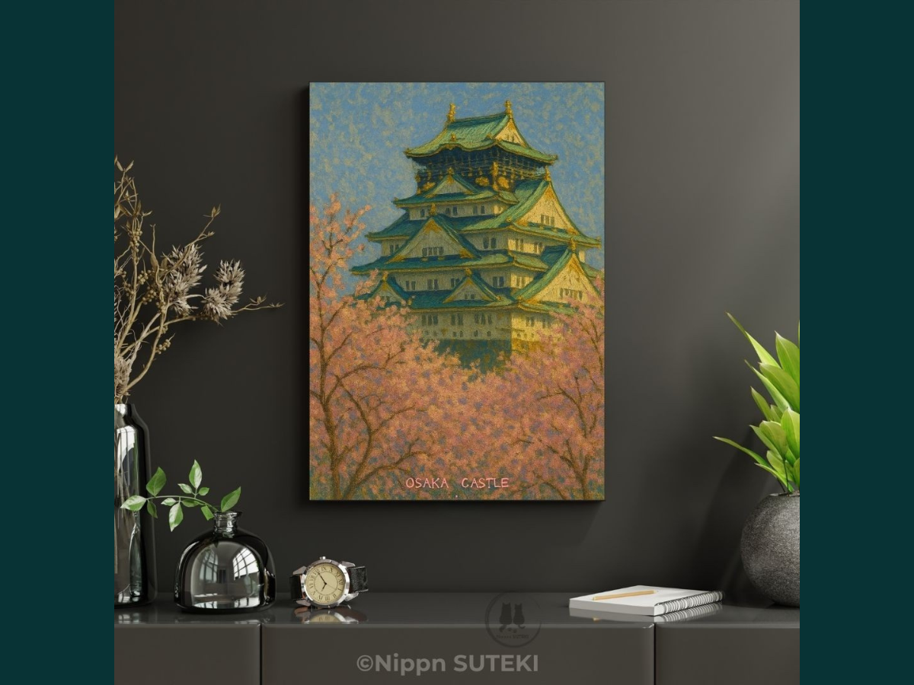
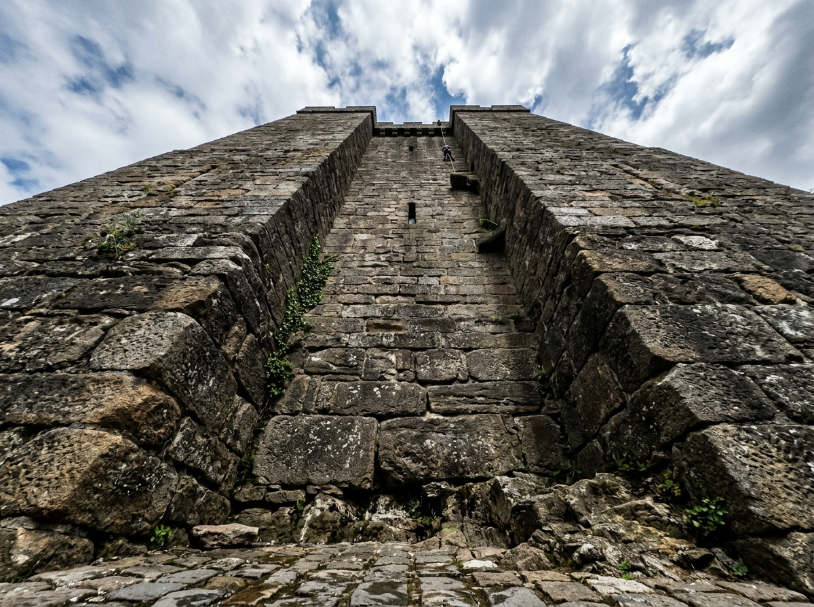
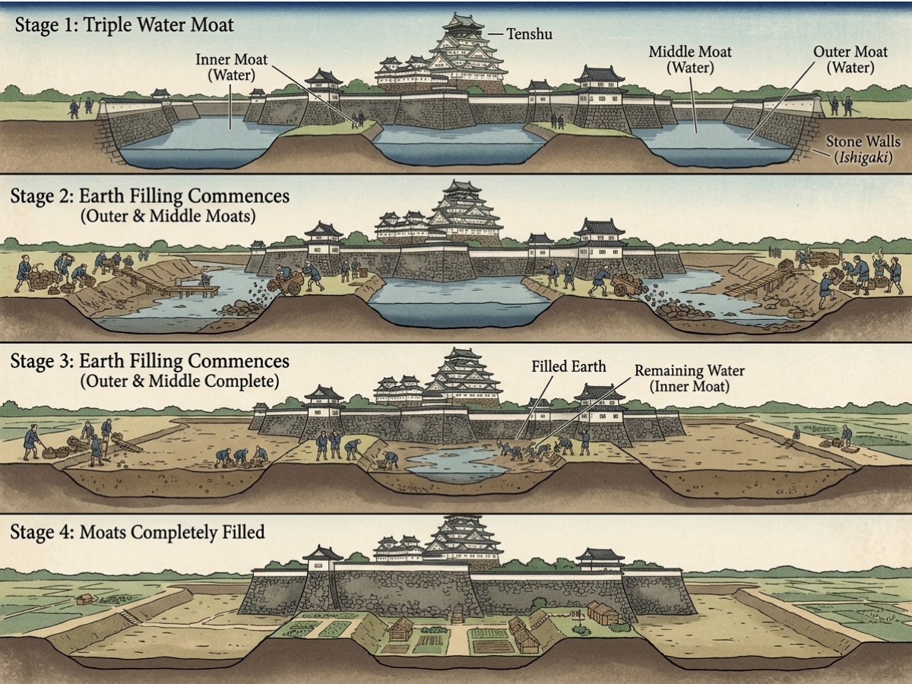

What if the beauty you see is built on something you were never meant to notice?
Last time, we looked at the marks carved into stone.
Proof that someone carried it.
Placed it.
Left their name behind.
That was only the surface.
This is what those stones actually remember.

Not all walls are built to defend.
What the Walls Were Built to Say
Osaka Castle was never just a fortress.
When it was ordered in 1583,
it was meant to end something.
Not a battle —
a conversation.
The scale made that clear.
Stones larger than necessary.
Structures beyond efficiency.
Power, made visible.

Strength doesn’t always fail from the outside.
The Failure of Strength
In 1614, an army arrived.
But it did not attack.
It offered peace.
One condition:
fill the outer moat.
It sounded symbolic.
It wasn’t.
By the time it was understood,
the defenses were gone.
The fortress was never broken.
It was emptied.
What the Stones Became
The walls you see today came later.
Rebuilt not for war —
but for control.
Lords across Japan were required to contribute.
Stone.
Labor.
Obedience.
The carved marks changed meaning.
They were no longer ambition.
They became proof of submission.

Beauty can also be intentional.
Why the Trees Are Here
The cherry trees were added later.
Not just for beauty.
They carry an older idea:
that life is short,
and complete because of it.
They were planted
to preserve that awareness.
Even in peace.
A Temporary Alignment
Late March.
Blossoms bloom —
and disappear within days.
The stone remains.
The marks remain.
For a brief moment,
they exist in the same frame.
Permanence and impermanence.
Not designed.
Just overlapping.
What You Are Really Seeing
When you look at Osaka Castle in bloom,
you are not just seeing a landscape.
You are looking at a place where:
power reshaped reality,
a family disappeared,
and obedience was carved into stone.
And beside it,
flowers that exist
because they do not last.
Both are still there.
But only one returns every year.
For a short time.
That is why the image holds.